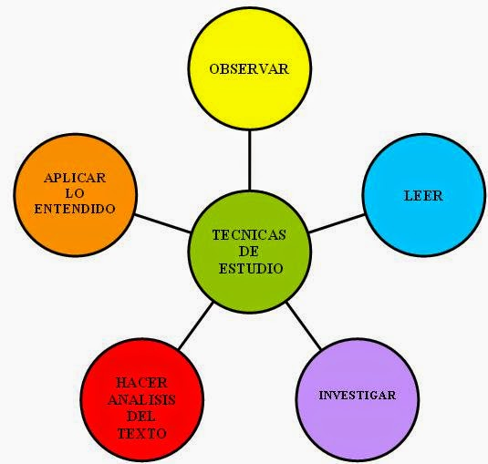
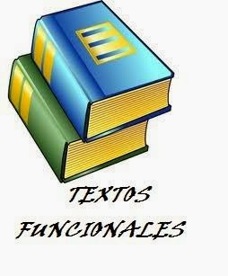
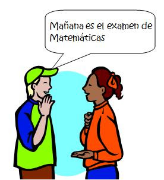
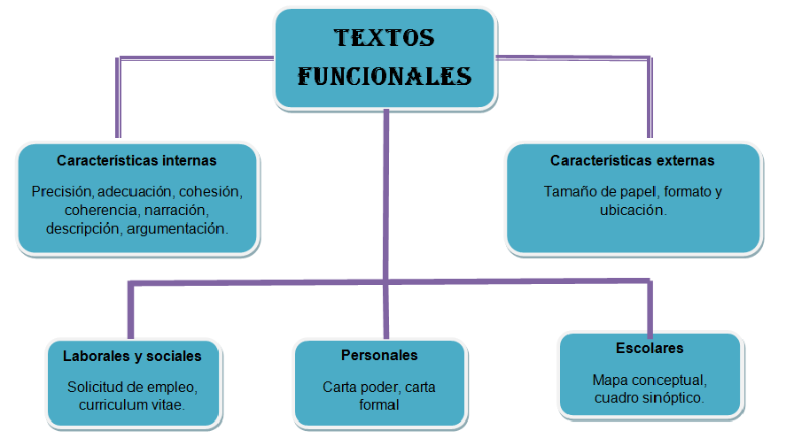
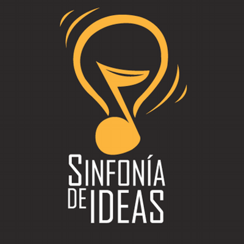
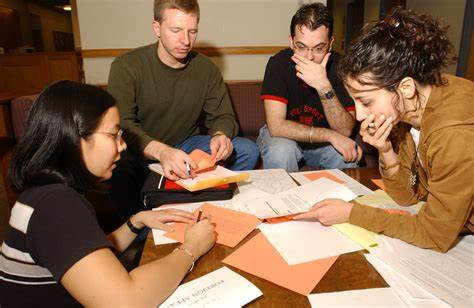

Encuentro con el Conocimiento: Aventura en las Aguas de la Sabiduría
Autor: Derek Miguel Ruiz Berroteran
En esta unidad, nos sumergimos en el fascinante mundo de las técnicas de estudio, explorando su relevancia para el aprendizaje efectivo. El encuentro comenzó con la explicación detallada de los objetivos del curso, los contenidos a cubrir y el sistema de evaluación. Además, se aplicó una prueba diagnóstica para identificar los conocimientos previos de los estudiantes.
Uno de los aspectos más destacados fue la reflexión profunda sobre la importancia de adquirir habilidades de estudio. Se nos planteó un escenario desafiante: como estudiantes de Ingeniería en Sistemas de Información, debíamos prepararnos para un examen integral que abarcaba diversos temas y eventos históricos estudiados durante todo el segundo trimestre. Se nos instó a considerar cuidadosamente qué técnicas de estudio serían más apropiadas para maximizar nuestro tiempo de estudio y asegurarnos de comprender y recordar la información clave.
En este contexto, se exploraron diversas técnicas de estudio, destacando el estudio en grupo como una herramienta valiosa. Aunque se resaltaron sus ventajas, como el intercambio de ideas y el aprendizaje colaborativo, también se subrayaron las posibles distracciones y desafíos logísticos que podrían surgir al coordinar horarios.
La unidad también incluyó la aplicación práctica de técnicas de estudio al leer un texto sobre "Lenguaje, lengua y habla". Se nos animó a aplicar las técnicas que consideráramos apropiadas y luego reflexionar sobre cómo nos sentimos al utilizar cada técnica y qué resultados obtuvimos.
Finalmente, se exploró el proceso comunicativo y sus funciones en el lenguaje. Se utilizó el modelo de comunicación de Jacokobson para entender la función referencial del lenguaje y se examinaron las funciones apelativa, metalingüística, emotiva y poética.
En resumen, la unidad proporcionó una visión integral de las técnicas de estudio, desde la preparación para exámenes desafiantes hasta la aplicación práctica de estas técnicas al abordar textos complejos y al analizar el proceso comunicativo y sus funciones en el lenguaje. Este conocimiento no solo es esencial para el éxito académico, sino que también enriquece nuestra capacidad para comunicarnos de manera efectiva en la vida cotidiana.
Una definición de textos funcionales según el autor de la imagen que está abajo es "TEXTO FUNCIONAL: es un escrito eficaz, cuyo contenido y diseño facilita su uso para la obtención de un propósito que generalmente está relacionado con la solución de un problema específico."
Navegando por las Profundidades de los Textos Funcionales
Autor: Kelvin Gabriel Muñiz López
En la primera unidad de la asignatura "Técnicas de Estudio" se abordó el tema de "Textos Funcionales", destacando la función referencial y apelativa del lenguaje. La unidad, impartida por el Lic. Ariel Parrales Rueda para la carrera de Ingeniería en Sistema de Información, se llevó a cabo en la semana del 15 al 17 de agosto de 2023.Se definieron los textos funcionales como escritos prácticos, atractivos y útiles, incluyendo instructivos, reglamentos, manuales, recetarios de cocina y anuncios publicitarios. Se hizo énfasis en la función apelativa, dirigida al receptor mediante órdenes, ruegos, mandatos y preguntas, utilizando el modo imperativo y verbos en infinitivo
.Se identificaron textos científicos y tecnológicos con función referencial, destacando la objetividad y la incorporación de datos en su redacción. Se subrayó la importancia de la función apelativa en la vida cotidiana, manifestándose en currículum vitae, mapas conceptuales, solicitudes de empleo, entre otros.
La intención comunicativa de los textos funcionales se analizó desde las funciones del lenguaje, resaltando las referencial y apelativa. Se exploraron las características de estas funciones, diferenciando la función referencial centrada en informar objetivamente y la función apelativa dirigida a influir en el receptor.
Se profundizó en la función referencial con ejemplos de textos científicos, periodísticos, documentos administrativos, informes y conferencias. Se destacaron los rasgos caracterizadores de estos textos, como el uso de la tercera persona, vocabulario técnico y oraciones impersonales.
La función apelativa se abordó en textos persuasivos como publicidad, textos periodísticos, discursos, ensayos e instructivos. Se describieron los rasgos de estos textos, con énfasis en el uso de la segunda persona, modo verbal imperativo y oraciones exhortativas.
Finalmente, se exploraron los propósitos del texto, clasificándolos en informativos, persuasivos y prescriptivos, según la intención del autor de añadir información, modificar creencias o regular conductas del lector.
Actividades en Clase:Se propusieron actividades prácticas para analizar ejemplos de textos funcionales, identificar la función del lenguaje predominante y determinar la intención comunicativa. Se alentó a los estudiantes a buscar y recortar ejemplos de periódicos y revistas, resaltando las funciones apelativa y referencial, para compartir en el plenario del grupo.
Arquitectura Lingüística: Construyendo Significados en Textos Funcionales
Autor: Carlos Alberto Vallejos Tijerino
Este semestre, me aventuré por las aguas desconocidas de los Textos Funcionales en la asignatura de Técnicas de Estudio, y debo decir que la experiencia fue más intrigante de lo que jamás imaginé. Bajo la guía experta del Capitán de la Sabiduría, el Lic. Ariel Parrales Rueda, exploramos las profundidades de las características internas y externas de estos textos, desentrañando sus secretos fundamentales: coherencia, cohesión y adecuación.
Descubrimiento en las Profundidades Textuales Dentro del vasto océano de los Textos Funcionales, me encontré con un universo de prototipos textuales, desde narraciones hasta argumentaciones. Cada uno de ellos, junto con las propiedades textuales, se reveló como el andamiaje esencial para construir mensajes efectivos.Coherencia: Esta propiedad se convirtió en mi brújula, guiándome a través de la necesidad de estructurar información de manera lógica y ordenada. Descubrí que para tener un texto coherente, debemos mantener una unidad temática, evitar contradicciones y deshacernos de la información irrelevante.
Cohesión: Sumergirme en esta propiedad fue como desentrañar el tejido mágico que conecta todas las ideas. Desde el arte de la puntuación hasta la danza de los conectores de discurso, aprendí cómo cada palabra y frase deben entrelazarse para lograr un texto cohesionado.
Adecuación: Más que cumplir con reglas lingüísticas, descubrí que la adecuación implica adaptarse al contexto de comunicación. Este faro ilumina el camino hacia mensajes precisos y comprensibles.
Exploración de las Formas Externas La presentación externa de un texto también se convirtió en una pieza clave de mi travesía. Desde la estética visual hasta el formato correcto, cada detalle contribuye a la calidad del mensaje.
Formato y Presentación: La unidad me instó a considerar cuidadosamente cómo presentamos un texto, desde un título claro hasta márgenes definidos. Entendí que la impresión general de limpieza es crucial, y que incluso la elección del formato y elementos gráficos afecta la percepción del lector.

Poniendo en Práctica lo Aprendido
Las actividades en clase añadieron un toque de realidad a mis aprendizajes. Desde analizar cartas de recomendación hasta redactar anuncios de periódico y desentrañar instructivos, cada tarea me desafió a aplicar los conceptos en situaciones del día a día.

El Café como Metáfora: La elaboración de un instructivo sobre cómo preparar café con una cafetera de goteo me permitió fusionar teoría y práctica. Comprender las características externas e internas de este instructivo me mostró cómo aplicar los conceptos aprendidos de manera tangible.
Reflexiones FinalesEn resumen, este viaje por los Textos Funcionales no solo me proporcionó conocimientos teóricos, sino también herramientas prácticas para comunicarme de manera efectiva. Cada lección fue un faro que iluminó mi camino hacia una comprensión más profunda de la importancia de la coherencia, cohesión y adecuación en la escritura.
A medida que continuamos este viaje educativo, llevaré estas lecciones como un tesoro, recordando que la calidad educativa se construye no solo en las aulas, sino en la capacidad de comunicarnos con claridad en todos los aspectos de la vida. ¡Que sigan las aventuras en las aguas de la sabiduría!
Un concepto de textos funcionales y sus características internas "Los textos funcionales son aquellos que, como su propio nombre indica, cumplen una función específica; es decir, son textos que se dirigen al receptor del mensaje de forma directa, clara y concreta, y tienen la misión de que éste realice una acción específica."
Sinfonía de Ideas: Explorando la Comunicación Escrita
Colaboración de Todos los Autores
En nuestra primera travesía por la asignatura "Técnicas de Estudio" de este año académico, nos sumergimos como grupo en el fascinante universo de los "Textos Funcionales". Bajo la atenta guía del Lic. Ariel Parrales Rueda, quien desempeñó el papel de Capitán de la Sabiduría, exploramos los secretos de estos textos durante la semana del 15 al 17 de agosto de 2023, dejando una marca imborrable en nuestro viaje educativo.
Descifrando la Esencia de los Textos FuncionalesEn las aulas, nos enfrentamos juntos a la definición de los textos funcionales como escritos prácticos, atractivos y útiles. Desde instructivos hasta anuncios publicitarios, la función referencial y apelativa del lenguaje emergió como protagonista en la construcción de estos mensajes dirigidos a informar y persuadir. La función apelativa, con su uso del modo imperativo y verbos en infinitivo, se convirtió en el timón que guía a cada uno de nosotros hacia acciones específicas.
Un Vistazo a las Profundidades de la Función Referencial y ApelativaIdentificamos textos científicos y tecnológicos como guardianes de la función referencial, destacando su objetividad y la inclusión de datos precisos. Al mismo tiempo, resaltamos la omnipresencia de la función apelativa en la vida cotidiana, manifestándose en currículum vitae, mapas conceptuales y solicitudes de empleo que, como grupo, exploramos.
La intención comunicativa de estos textos se analizó desde las funciones del lenguaje, revelando la trama entre la referencial y la apelativa. Juntos, exploramos las características distintivas de cada función, desentrañando la diferencia entre informar objetivamente y persuadir al receptor.
Sumergiéndonos en las Características InternasDesglosamos la función referencial con ejemplos de textos científicos, periodísticos, documentos administrativos e informes. Los rasgos caracterizadores, como el uso de la tercera persona, el vocabulario técnico y las oraciones impersonales, salieron a flote, revelando la riqueza de esta función.
En cambio, la función apelativa se desplegó en textos persuasivos como publicidad, textos periodísticos y ensayos. Describimos los rasgos clave, haciendo hincapié en el uso de la segunda persona, el modo verbal imperativo y las oraciones exhortativas.
La Marea de los Propósitos del TextoLa unidad no solo se centró en las características internas, sino que también exploró los propósitos subyacentes en los textos. Clasificarlos como informativos, persuasivos y prescriptivos arrojó luz sobre la intención del autor de añadir información, cambiar creencias o regular conductas del lector.
Navegando las Actividades PrácticasPara consolidar nuestro conocimiento, nos desafiamos con actividades prácticas. Analizamos ejemplos de textos funcionales, identificamos la función del lenguaje predominante y determinamos la intención comunicativa, convirtiendo esto en una aventura educativa conjunta. Nos alentamos unos a otros a explorar periódicos y revistas, recortando ejemplos para compartir en el plenario del grupo, resaltando las funciones apelativa y referencial.
Arquitectura Lingüística: Construyendo Significados en Textos FuncionalesEn nuestro propio recorrido, esta experiencia se asemejó a navegar por aguas desconocidas, donde la coherencia, cohesión y adecuación se convirtieron en las estrellas guías. La coherencia, como una brújula, nos orientó hacia la estructuración lógica, evitando contradicciones y eliminando lo superfluo. La cohesión, ese tejido mágico, nos mostró cómo cada palabra y frase deben entrelazarse, mientras que la adecuación nos recordó la importancia de adaptarse al contexto de comunicación.
Explorando las Formas Externas: Presentación y FormatoEl viaje no solo se limitó a las profundidades textuales; también exploramos las formas externas. Desde la presentación visual hasta el formato correcto, cada detalle contribuyó a la calidad del mensaje. La impresión general de limpieza se reveló como crucial, y la elección del formato y elementos gráficos se destacó como un arte que afecta la percepción del lector.
Poniendo en Práctica el Conocimiento AdquiridoLas actividades prácticas añadieron un toque de realidad a nuestros aprendizajes. Desde analizar cartas de recomendación hasta redactar anuncios de periódico y desentrañar instructivos, cada tarea nos desafió a aplicar los conceptos en situaciones del día a día. La elaboración de un instructivo sobre cómo preparar café con una cafetera de goteo se convirtió en nuestra propia metáfora, fusionando teoría y práctica.
Conclusiones y Recomendaciones Generales
Al llegar al puerto de esta travesía académica, podemos concluir que el estudio de los Textos Funcionales no solo amplió nuestros conocimientos, sino que también fortaleció nuestras habilidades de comunicación escrita. Cada autor, guiado por la sapiencia del Lic. Ariel Parrales Rueda, aportó su perspectiva única a esta sinfonía de ideas.
Recomendamos a futuros navegantes de esta asignatura abrazar la diversidad de voces, escuchar con empatía y permitir que la creatividad fluya en cada palabra. La construcción de significados en textos funcionales es un arte y una ciencia, y explorar las aguas de la sabiduría con mente abierta es la clave para desbloquear nuevas fronteras del conocimiento.